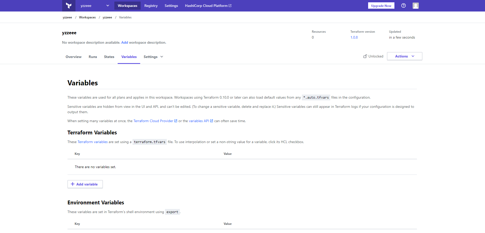

20. 원격 상태 저장
20.1 백앤드 종류
- 표준 백앤드
- artifactory
- azurerm
- consul
- etcd
- s3 등등
표준 백앤드는 기본적으로 terraform.tfstate 만 저장 가능
- 향상된 백앤드 1.local(기본 백엔드) : 로컬 시스템은 테라폼 명령어를 실행가능하니깐 향상된 !
- remote: terraform cloud
20.2 백앤드 구성
예
terraform {
backend "remote" { # remote는 terraform cloud를 의미
organization = "example_corp"
workspace {
name = "my-app-prod"
}
}
}
20.3 Terraform Cloud를 이용한 원격 백애드 구성
https://app.terraform.io/
위 사이트에 가서 Terraform Cloud 에 가입한다.
가입 완료후 이메일 인증하고
터미널 띄워서 아래 명령을 실행한다.
$ terraform login
Terraform will request an API token for app.terraform.io using your browser.
If login is successful, Terraform will store the token in plain text in
the following file for use by subsequent commands:
/home/$USER/.terraform.d/credentials.tfrc.json
Do you want to proceed?
Only 'yes' will be accepted to confirm.
Enter a value: yes
yes 를 치고 나면 브라우저가 뜨면서 Token 생성하는 페이지로 접속된다.
Token 생성하고 터미널에 붙여넣기한다.
---------------------------------------------------------------------------------
Terraform must now open a web browser to the tokens page for app.terraform.io.
If a browser does not open this automatically, open the following URL to proceed:
https://app.terraform.io/app/settings/tokens?source=terraform-login
---------------------------------------------------------------------------------
Generate a token using your browser, and copy-paste it into this prompt.
Terraform will store the token in plain text in the following file
for use by subsequent commands:
/home/$USER/.terraform.d/credentials.tfrc.json
Token for app.terraform.io:
Enter a value: [5941:5991:1008/163507.542562:ERROR:chrome_browser_main_extra_parts_metrics.cc(228)] crbug.com/1216328: Checking Bluetooth availability started. Please report if there is no report that this ends.
[5941:5991:1008/163507.542590:ERROR:chrome_browser_main_extra_parts_metrics.cc(231)] crbug.com/1216328: Checking Bluetooth availability ended.
[5941:5991:1008/163507.542598:ERROR:chrome_browser_main_extra_parts_metrics.cc(234)] crbug.com/1216328: Checking default browser status started. Please report if there is no report that this ends.
[5941:5991:1008/163507.573195:ERROR:chrome_browser_main_extra_parts_metrics.cc(238)] crbug.com/1216328: Checking default browser status ended.
막 뭐가 나와있어서 이상하긴 한데 그냥 붙여 넣기 하고 엔터 하면
Token 값 설정이 되면서 아래 처럼 나온다.
Retrieved token for user $USER
---------------------------------------------------------------------------------
-
----- -
--------- --
--------- - -----
--------- ------ -------
------- --------- ----------
---- ---------- ----------
-- ---------- ----------
Welcome to Terraform Cloud! - ---------- -------
--- ----- ---
Documentation: terraform.io/docs/cloud -------- -
----------
----------
---------
-----
-
New to TFC? Follow these steps to instantly apply an example configuration:
$ git clone https://github.com/hashicorp/tfc-getting-started.git
$ cd tfc-getting-started
$ scripts/setup.sh
provider.tf에 이거 넣어주면 해당 워크스페이스에 terraform.tfstate파일이 저장됨
그런데,, variables는 저장 안되므로 따로 저장 관리해주어야함
terraform {
backend "remote" { # remote는 terraform cloud를 의미
organization = "example_corp"
workspace {
name = "my-app-prod"
}
}
required_providers {
aws = {
source = "hashicorp/aws"
version = "~> 3.34"
}
}
}
provider "aws" {
profile = "default"
region = "ap-northeast-2"
}
